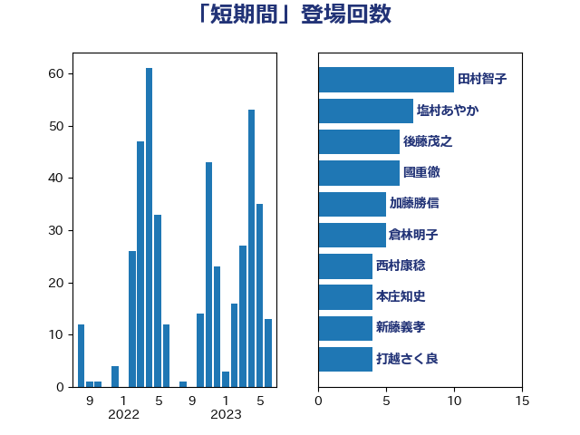

単語「短期間」

| 田村憲久 | 自由民主党 | 22 回 |
| 西村康稔 | 自由民主党 | 12 回 |
| 平井卓也 | 自由民主党 | 9 回 |
| 田村智子 | 日本共産党 | 9 回 |
| 萩生田光一 | 自由民主党 | 8 回 |
| 赤羽一嘉 | 公明党 | 7 回 |
| 井上英孝 | 日本維新の会 | 6 回 |
| 川田龍平 | 立憲民主党 | 6 回 |
| 後藤茂之 | 自由民主党 | 6 回 |
| 足立康史 | 日本維新の会 | 6 回 |
| 中島克仁 | 立憲民主党 | 5 回 |
| 塩村あやか | 立憲民主党 | 5 回 |
| 大島敦 | 立憲民主党 | 4 回 |
| 大西健介 | 立憲民主党 | 4 回 |
| 柴田巧 | 日本維新の会 | 4 回 |
| 浜口誠 | 国民民主党 | 4 回 |
| 田村まみ | 国民民主党 | 4 回 |
| 麻生太郎 | 自由民主党 | 4 回 |
| 倉林明子 | 日本共産党 | 3 回 |
| 古賀友一郎 | 自由民主党 | 3 回 |
| 吉川沙織 | 立憲民主党 | 3 回 |
| 山本博司 | 公明党 | 3 回 |
| 後藤祐一 | 立憲民主党 | 3 回 |
| 打越さく良 | 立憲民主党 | 3 回 |
| 本庄知史 | 立憲民主党 | 3 回 |
| 梅村聡 | 日本維新の会 | 3 回 |
| 梶山弘志 | 自由民主党 | 3 回 |
| 河野太郎 | 自由民主党 | 3 回 |
| 玉木雄一郎 | 国民民主党 | 3 回 |
| 石橋通宏 | 立憲民主党 | 3 回 |
| 羽田次郎 | 立憲民主党 | 3 回 |
| 芳賀道也 | 国民民主党 | 3 回 |
| 菅義偉 | 自由民主党 | 3 回 |
| 伊波洋一 | 無所属 | 2 回 |
| 伊藤孝恵 | 国民民主党 | 2 回 |
| 佐藤英道 | 公明党 | 2 回 |
| 古川元久 | 国民民主党 | 2 回 |
| 古川康 | 自由民主党 | 2 回 |
| 吉田忠智 | 立憲民主党 | 2 回 |
| 吉田統彦 | 立憲民主党 | 2 回 |
| 嘉田由紀子 | 無所属 | 2 回 |
| 塩川鉄也 | 日本共産党 | 2 回 |
| 安江伸夫 | 公明党 | 2 回 |
| 室井邦彦 | 日本維新の会 | 2 回 |
| 小里泰弘 | 自由民主党 | 2 回 |
| 尾身朝子 | 自由民主党 | 2 回 |
| 山崎正恭 | 公明党 | 2 回 |
| 山田勝彦 | 立憲民主党 | 2 回 |
| 庄子賢一 | 公明党 | 2 回 |
| 本田顕子 | 自由民主党 | 2 回 |
| 枝野幸男 | 立憲民主党 | 2 回 |
| 浅田均 | 日本維新の会 | 2 回 |
| 渡辺周 | 立憲民主党 | 2 回 |
| 熊田裕通 | 自由民主党 | 2 回 |
| 玄葉光一郎 | 立憲民主党 | 2 回 |
| 白石洋一 | 立憲民主党 | 2 回 |
| 福重隆浩 | 公明党 | 2 回 |
| 若松謙維 | 公明党 | 2 回 |
| 荒井優 | 立憲民主党 | 2 回 |
| 西村智奈美 | 立憲民主党 | 2 回 |
| 赤澤亮正 | 自由民主党 | 2 回 |
| 近藤和也 | 立憲民主党 | 2 回 |
| 高良鉄美 | 無所属 | 2 回 |
| こやり隆史 | 自由民主党 | 1 回 |
| 一谷勇一郎 | 日本維新の会 | 1 回 |
| 三浦信祐 | 公明党 | 1 回 |
| 上川陽子 | 自由民主党 | 1 回 |
| 中村裕之 | 自由民主党 | 1 回 |
| 中根一幸 | 自由民主党 | 1 回 |
| 井上信治 | 自由民主党 | 1 回 |
| 井上哲士 | 日本共産党 | 1 回 |
| 仁木博文 | 無所属 | 1 回 |
| 伊藤俊輔 | 立憲民主党 | 1 回 |
| 前川清成 | 日本維新の会 | 1 回 |
| 勝部賢志 | 立憲民主党 | 1 回 |
| 古屋圭司 | 自由民主党 | 1 回 |
| 古屋範子 | 公明党 | 1 回 |
| 吉川赳 | 無所属 | 1 回 |
| 吉田久美子 | 公明党 | 1 回 |
| 吉田宣弘 | 公明党 | 1 回 |
| 和田有一朗 | 日本維新の会 | 1 回 |
| 國重徹 | 公明党 | 1 回 |
| 堀井巌 | 自由民主党 | 1 回 |
| 塩谷立 | 自由民主党 | 1 回 |
| 大塚耕平 | 国民民主党 | 1 回 |
| 大西英男 | 自由民主党 | 1 回 |
| 太田房江 | 自由民主党 | 1 回 |
| 宮崎政久 | 自由民主党 | 1 回 |
| 小倉將信 | 自由民主党 | 1 回 |
| 小宮山泰子 | 立憲民主党 | 1 回 |
| 小林鷹之 | 自由民主党 | 1 回 |
| 小池晃 | 日本共産党 | 1 回 |
| 小沢雅仁 | 立憲民主党 | 1 回 |
| 小沼巧 | 立憲民主党 | 1 回 |
| 山下芳生 | 日本共産党 | 1 回 |
| 山下貴司 | 自由民主党 | 1 回 |
| 山井和則 | 立憲民主党 | 1 回 |
| 山口壯 | 自由民主党 | 1 回 |
| 山口那津男 | 公明党 | 1 回 |
| 山崎誠 | 立憲民主党 | 1 回 |
| 山田美樹 | 自由民主党 | 1 回 |
| 岸信夫 | 自由民主党 | 1 回 |
| 岸田文雄 | 自由民主党 | 1 回 |
| 斉藤鉄夫 | 公明党 | 1 回 |
| 斎藤アレックス | 国民民主党 | 1 回 |
| 末松信介 | 自由民主党 | 1 回 |
| 本村伸子 | 日本共産党 | 1 回 |
| 杉田水脈 | 自由民主党 | 1 回 |
| 村井英樹 | 自由民主党 | 1 回 |
| 松沢成文 | 日本維新の会 | 1 回 |
| 柚木道義 | 立憲民主党 | 1 回 |
| 柳ヶ瀬裕文 | 日本維新の会 | 1 回 |
| 森まさこ | 自由民主党 | 1 回 |
| 森田俊和 | 立憲民主党 | 1 回 |
| 橋本聖子 | 無所属 | 1 回 |
| 江島潔 | 自由民主党 | 1 回 |
| 池下卓 | 日本維新の会 | 1 回 |
| 滝波宏文 | 自由民主党 | 1 回 |
| 片山さつき | 自由民主党 | 1 回 |
| 田中健 | 国民民主党 | 1 回 |
| 田所嘉徳 | 自由民主党 | 1 回 |
| 盛山正仁 | 自由民主党 | 1 回 |
| 矢倉克夫 | 公明党 | 1 回 |
| 石井啓一 | 公明党 | 1 回 |
| 石垣のりこ | 立憲民主党 | 1 回 |
| 石川大我 | 立憲民主党 | 1 回 |
| 神津たけし | 立憲民主党 | 1 回 |
| 福岡資麿 | 自由民主党 | 1 回 |
| 福島伸享 | 無所属 | 1 回 |
| 稲富修二 | 立憲民主党 | 1 回 |
| 竹内譲 | 公明党 | 1 回 |
| 笠井亮 | 日本共産党 | 1 回 |
| 篠原豪 | 立憲民主党 | 1 回 |
| 米山隆一 | 立憲民主党 | 1 回 |
| 細田健一 | 自由民主党 | 1 回 |
| 舞立昇治 | 自由民主党 | 1 回 |
| 舟山康江 | 国民民主党 | 1 回 |
| 茂木敏充 | 自由民主党 | 1 回 |
| 蓮舫 | 立憲民主党 | 1 回 |
| 藤井比早之 | 自由民主党 | 1 回 |
| 藤川政人 | 自由民主党 | 1 回 |
| 藤木眞也 | 自由民主党 | 1 回 |
| 西岡秀子 | 国民民主党 | 1 回 |
| 西田昌司 | 自由民主党 | 1 回 |
| 西野太亮 | 自由民主党 | 1 回 |
| 西銘恒三郎 | 自由民主党 | 1 回 |
| 角田秀穂 | 公明党 | 1 回 |
| 逢坂誠二 | 立憲民主党 | 1 回 |
| 道下大樹 | 立憲民主党 | 1 回 |
| 野上浩太郎 | 自由民主党 | 1 回 |
| 野田佳彦 | 立憲民主党 | 1 回 |
| 鈴木宗男 | 日本維新の会 | 1 回 |
| 鈴木憲和 | 自由民主党 | 1 回 |
| 鈴木貴子 | 自由民主党 | 1 回 |
| 阿達雅志 | 自由民主党 | 1 回 |
| 階猛 | 立憲民主党 | 1 回 |
| 青柳陽一郎 | 立憲民主党 | 1 回 |
| 高木かおり | 日本維新の会 | 1 回 |
| 高橋千鶴子 | 日本共産党 | 1 回 |